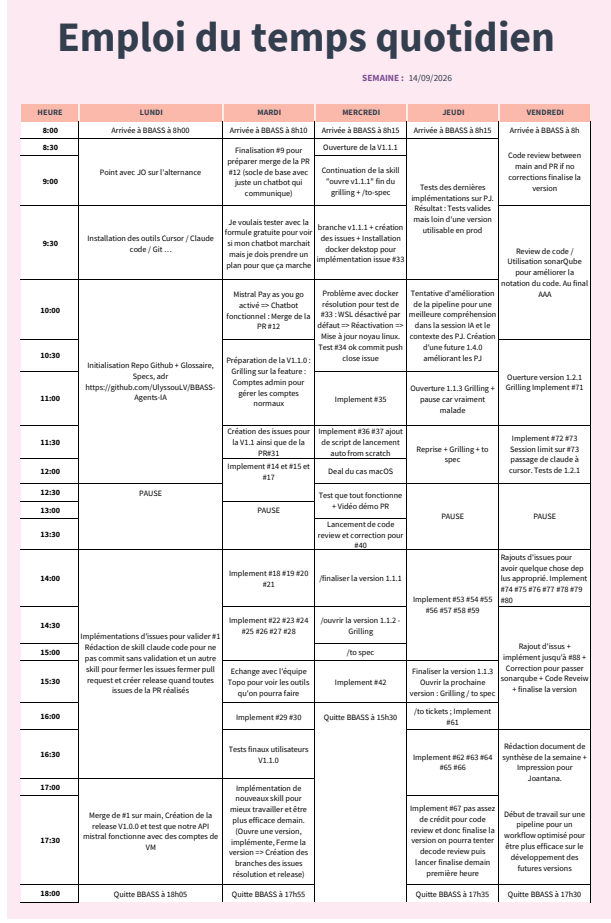

Alternance Agents IA · 2026–2027
Bilan de semaine - Alternance Ulysse LONG
Travail réalisé
Lundi 14 septembre
- Installation de l’environnement de travail (éditeur, Git, outillage).
- Initialisation du dépôt GitHub, du glossaire métier, des spécifications et des décisions d’architecture.
- Première livraison : une interface pour échanger avec Mistral.
- Vérification : l’API Mistral répond via la VM, avec des comptes de test.
Mardi 15 septembre
- Finalisation du socle de chat (connexion Pay as you go Mistral).
- Conception puis développement de la V1.1.0 : comptes administrateurs, gestion des comptes collaborateurs, pôles, mots de passe, révocation de session.
- Tests utilisateurs de la V1.1.0.
- Premier échange avec l’équipe Topo sur les outils susceptibles d’être branchés plus tard (sans suite immédiate).
Mercredi 16 septembre
- Livraison de la V1.1.1 : le chat a une mémoire d’un message à l’autre (ce n’était pas le cas en V1.1.0) ; conversations mémorisées sur la VM (plusieurs fils, reprise après rechargement ou autre poste), résumé glissant, profil de travail en lecture seule, PostgreSQL. Les échanges ne sont pas stockés chez Mistral.
- Lanceurs Windows et macOS : un double-clic installe les dépendances au besoin et démarre le logiciel (Docker + Postgres local).
- Tests manuels du chat persisté (fils, résumé, profil).
- Ouverture de la V1.1.2 (pièces jointes) : spec et décision d’architecture (fichier jamais stocké durablement chez Mistral ; OCR pour les PDF, extraction locale Word/Excel, vision pour les images).
Jeudi 17 septembre
- Implémentation puis livraison de la V1.1.2 : une pièce jointe par message (PDF, Word, Excel, image) ; fichier original sur disque côté VM ; extraction (OCR Mistral, locale Word/Excel, vision pour l’image) ; contenu injecté dans le chat ; mention courte dans le résumé glissant ; rappel via un outil si la pièce jointe sort de la fenêtre des trois derniers messages. Jamais de Files API Mistral.
- Zone de dépôt minimale côté poste (non stylisée).
- Tests fonctionnels sur Mistral (PDF Cerfa DT, carte IGN, vue aérienne) : le pipeline d’extraction tient ; le chat mélange encore des documents et invente des liens entre pièces jointes. Comptes rendus dans le dossier de suivi de la semaine.
- Livraison de la V1.1.3 : une ligne de consommation par appel Mistral réel (chat, titrage, résumé+profil, OCR, vision) — tokens ou pages selon le type, coût figé au tarif du jour (pas d’API de tarification Mistral). Fenêtre Consommation côté collaborateur (total + classement des conversations par coût) ; onglet Consommations côté administrateur (comptes classés par coût, jamais de détail par conversation). La suppression d’une conversation conserve les lignes de consommation.
Vendredi 18 septembre
- Livraison de la V1.2.0 : interface du poste réécrite en React/TypeScript/Vite (shadcn/ui, Tailwind, TanStack Query). L’écran comptes (compte administrateur) passe d’un empilement de formulaires à un tableau et une modale par action (création, modification, statut administrateur, suppression — clé d’administration VM inchangée). Le build est committé dans git : un poste collaborateur n’installe pas Node.js (double-clic sur le lanceur comme avant).
- Revue de code SonarCloud :
mainétait en note de sécurité E. Passage en revue des alertes (dont un signalement de parcours de fichier sur les pièces jointes, déjà contré dans le code, marqué faux positif) et nettoyage des « code smells ». - Ouverture puis livraison de la V1.2.1 : identité visuelle du poste aux couleurs du cabinet BBASS Géomètre-Expert (palette anthracite/rouge de marque, police Manrope auto-hébergée, logo, favicon) et disposition façon ChatGPT (sidebar avec conversations et puce compte, page Profil dédiée, Panel d’administration dédié avec de vrais tableaux et étiquettes shadcn/ui). Périmètre initialement prévu comme « ajustements CSS uniquement », élargi en cours de grilling (décision explicite du cabinet) à cette refonte de disposition. Aucun changement côté VM centrale ni du contrat API ; suite pytest existante restée verte sans modification.
- La V1.2.1 n’était pas prévue cette semaine : elle a pris la place initialement réservée à la V1.3.0. Faute de temps restant vendredi, l’ouverture de la V1.3.0 (premier agent, pôle Administration, Moduléo) est reportée à la semaine prochaine.
Reste à implémenter
- V1.3.0 — premier agent, pôle Administration, Moduléo (API, serveur de test, lecture seule, plan d’automatisme sans écriture ni exécution). Reporté à la semaine prochaine : la V1.2.1 (identité visuelle et disposition), non prévue au départ, a pris la place de son ouverture cette semaine, par manque de temps.
Livré pour le 18/09/2026
Point vendredi 18 septembre — visé : V1.3.0 · livré : V1.2.0
Architecture
- Logiciel sur le poste (interface web locale) ; VM à Castries, réseau interne seulement.
- La VM détient les comptes, les conversations et la clé API Mistral ; le poste n’appelle jamais Mistral directement.
- Base PostgreSQL sur la VM (plus SQLite) ; Postgres local via Docker pour le développement.
Connexion et chat
- Identifiant et mot de passe ; session conservée (identifiants Windows) jusqu’à déconnexion ou révocation.
- Chat vers Mistral ; affichage prénom, nom, identifiant, agence et pôle(s).
- Mémoire d’un message à l’autre (livré en V1.1.1) ; plusieurs conversations par compte, persistées sur la VM : reprise après rechargement, relance du poste, autre machine du même compte. Titre auto, renommage, suppression. Historique borné (3 derniers messages + résumé). Profil de travail consultable, sans modifier l’identité du compte. Conversations privées (y compris vis-à-vis d’un compte administrateur).
- Pièces jointes (V1.1.2, livrée jeudi 17) : un document par message (PDF, Word, Excel ou image), stocké côté VM ; le fichier n’est pas conservé chez Mistral. OCR pour les PDF, extraction locale pour Word/Excel, analyse visuelle pour les images. Le chat n’a le contenu complet que le tour de l’envoi, puis une mention courte + un outil de rappel.
- Suivi de la consommation (V1.1.3, livrée jeudi 17) : une ligne par appel Mistral réel (chat, titrage, résumé+profil, OCR, vision), tokens ou pages, coût figé au tarif du jour. Fenêtre Consommation pour le collaborateur ; onglet Consommations pour un compte administrateur (agrégat par compte, jamais par conversation).
- Interface poste (V1.2.0, livrée vendredi 18) : React/TypeScript/Vite, shadcn/ui ; écran comptes en tableau + modales. Chat, consommation et profil de travail : même comportement qu’en 1.1.3, présentation migrée. Pas de Node.js sur un poste collaborateur.
- Identité visuelle et disposition (V1.2.1, livrée vendredi 18) : couleurs et police du cabinet, logo, favicon ; sidebar avec conversations et puce compte en remplacement des onglets à plat ; page Profil dédiée (consommation, profil de travail, déconnexion) et Panel d’administration dédié (comptes, consommations en tableaux/étiquettes) pour un compte administrateur. Aucun changement de comportement ni du contrat API.
Comptes administrateurs
- Droit global, distinct du pôle Administration. Premier administrateur créé en base à la main.
- Depuis le poste : liste, création, modification (identité, email, agence, un ou plusieurs des six pôles).
- Mot de passe aléatoire à la création ou à la réinitialisation ; obligation de le changer avant le chat.
- Déconnexion forcée. Promotion, rétrogradation et suppression définitive : clé d’administration VM en plus ; impossible de supprimer ou rétrograder le dernier administrateur.
Descriptif des versions
V1.0.0 — Socle
Déployé le 15/09/2026 à 10:05Le cabinet n’avait pas encore de point d’entrée vers une IA. Cette version pose le socle, déployé à Castries (maison mère) : un collaborateur se connecte, ouvre un chat sobre, et obtient une vraie réponse Mistral. Le champ agence du compte est déjà enregistré, mais il ne bloque personne : un compte rattaché à une autre agence pourrait chatter s’il accède à la machine centrale. La limite, c’est le réseau : seuls les postes du LAN de Castries joignent cette machine, pas Internet ni les agences satellites. Les agents métiers (Administration, Foncier, etc.) ne sont pas encore là ; la réponse est générique, volontairement, pour valider d’abord que le dispositif fonctionne.
Le logiciel s’exécute sur le poste. Les comptes et la clé d’accès à Mistral restent sur une machine centrale à Castries, joignable uniquement depuis le réseau interne. Ainsi un poste perdu ou inspecté n’expose pas la clé payante, et personne n’appelle Mistral sans être authentifié — donc sans consommer de crédit indûment. Le modèle Mistral utilisé est choisi uniquement côté central, pas depuis le poste, pour garder la maîtrise des coûts.
On installe un logiciel sur chaque poste plutôt qu’une page web hébergée sur un serveur : chaque machine a ainsi son propre backend, ce qui évite d’exposer les sessions et secrets de connexion comme le ferait un site consultable à distance. Le programme peut aussi continuer à s’ouvrir sur le poste si le lien avec la machine centrale est coupé. La connexion reste active après fermeture du logiciel (compte Windows) ; une déconnexion explicite permet de changer de collaborateur sur un poste partagé. Les comptes de cette version sont créés à la main côté central. Les conversations ne sont pas encore mémorisées : on a d’abord voulu sécuriser le socle avant de traiter conservation et confidentialité des échanges.
V1.1.0 — Gestion des comptes
Déployé le 15/09/2026 à 16:24En V1.0.0, chaque compte devait encore être créé à la main sur la machine centrale. Cette version permet à certains collaborateurs — les comptes administrateurs — de gérer les comptes depuis le logiciel : liste, création, modification (identité, email, agence, pôles), mot de passe généré automatiquement, déconnexion forcée, promotion ou rétrogradation d’un administrateur, suppression définitive. Le premier administrateur reste créé une fois à la main, pour amorcer le dispositif.
Le droit d’administrateur est global (tout le cabinet), distinct du pôle nommé « Administration ». Un compte peut appartenir à plusieurs pôles, car des collaborateurs couvrent plusieurs domaines. Pôle et agence s’affichent désormais dans le chat. À la création ou à la réinitialisation du mot de passe, le collaborateur doit en choisir un nouveau avant d’accéder au chat ; il ne peut pas changer son mot de passe de sa propre initiative en dehors de ce cas. La suppression et le changement de statut d’administrateur demandent, en plus, la clé d’administration de la machine centrale, saisie au moment de l’action — pour que ces gestes irréversibles restent délibérés. On ne peut pas supprimer ni rétrograder le dernier administrateur.
Réinitialiser un mot de passe n’expulse pas les sessions déjà ouvertes : seule la déconnexion forcée le fait, pour que les deux actions restent distinctes. Un administrateur rétrogradé perd l’écran Comptes dès la prochaine vérification au lancement du logiciel.
V1.1.1 — Persistance des conversations
Déployé le 16/09/2026 à 14:06En V1.1.0, chaque message partait vers Mistral sans mémoire : le modèle ne voyait pas les messages précédents, même dans le même échange, sans recharger la page. Cette version enregistre les conversations sur la machine centrale à Castries (PostgreSQL) : le fil se poursuit d’un message à l’autre, un collaborateur peut avoir plusieurs fils, les retrouver le lendemain, et les reprendre depuis un autre poste avec le même compte. Le titre est proposé automatiquement à partir du premier échange ; on peut le renommer ou supprimer un fil. Un administrateur ne lit pas les conversations des autres.
Pour maîtriser le coût (Mistral facture au token), on n’envoie plus tout l’historique à chaque tour : seulement les trois derniers messages, plus un résumé de ce qui est plus ancien. Un profil de travail, consultable en lecture seule, retient des habitudes de méthode — jamais le prénom, le nom, le pôle ou l’agence, qui restent sur le compte. Rien n’est stocké dans l’offre « Conversations » de Mistral : tout reste au cabinet.
Le logiciel se lance par un script (Windows ou macOS) qui démarre Postgres en local pour le développement. La vraie VM à Castries n’est pas encore créée ; le schéma est déjà celui de la production.
V1.1.2 — Pièces jointes
Déployé le 17/09/2026 à 10:47En V1.1.1, la table des pièces jointes existait déjà en base mais n’était ni peuplée ni lue : un collaborateur ne pouvait pas faire analyser un PDF, un Word, un Excel ou une image sans en recopier le contenu dans le chat. Cette version ajoute une zone de dépôt minimale (une pièce jointe par message) : le fichier original va sur disque côté VM, le texte extrait reste en base. PDF : OCR Mistral (appel ponctuel, jamais la Files API). Word et Excel : extraction locale sur la VM. Image : analyse visuelle Mistral, avec une explication textuelle si rien n’est exploitable.
À l’envoi du message, le contenu extrait est injecté pour cet appel de chat. Une fois le message sorti de la fenêtre des trois derniers, le résumé glissant n’en garde qu’une mention courte ; l’IA peut redemander le texte complet via un outil, sans ré-analyser le fichier. Seul le compte propriétaire voit ses pièces jointes (y compris vis-à-vis d’un administrateur). Supprimer une conversation efface aussi les fichiers sur disque.
Les essais fonctionnels du 17 septembre montrent que l’extraction tient, mais que le modèle de chat mélange encore des documents, refuse parfois une image pourtant extraite, et invente un lien entre pièces jointes sans preuve. Ces limites d’analyse (plusieurs PJ par message, traitement par pôle, fiabilité) sont reportées à la 1.4.0, une fois un Agent métier en place.
V1.1.3 — Consommation
Déployé le 17/09/2026 à 15:26Jusqu’ici, chaque appel Mistral coûtait de l’argent sans laisser de trace consultable au cabinet : impossible de savoir ce qu’un compte ou une conversation avait consommé. Cette version enregistre une ligne à chaque appel réel (chat, titrage, résumé+profil, OCR, vision) : tokens ou pages selon le type, modèle, coût déjà calculé avec le tarif du jour. Il n’existe pas d’API Mistral de tarification par appel ; les prix sont donc en dur dans le code, datés. Un tarif changé plus tard ne réécrit pas l’historique.
Un collaborateur ouvre une fenêtre Consommation : total (Chat vs Pièce jointe) et classement de ses conversations encore présentes, par coût. Un compte administrateur a un onglet Consommations séparé de Comptes : les comptes classés par coût, sans jamais voir le détail par conversation d’un autre. Supprimer une conversation retire le fil du classement, mais conserve les lignes de consommation (le total global ne recule pas).
Les écrans restaient minimaux ; le style de fond et les modales sont livrés en 1.2.0.
V1.2.0 — Interface poste
Déployé le 18/09/2026 à 09:08Jusqu’ici, l’interface du poste tenait dans un seul fichier, devenu difficile à faire évoluer sans tout casser (plus de 1 200 lignes). L’écran comptes d’un compte administrateur empilait en permanence le tableau, les formulaires de création et de modification, les révélations de mot de passe et les confirmations (clé d’administration de la machine centrale). Cette version réécrit entièrement l’interface du poste avec des outils plus robustes et plus faciles à faire évoluer sans risquer de régression, sans rien changer à la façon dont le poste communique avec la machine centrale.
Le tableau des comptes est désormais la vue par défaut ; créer, modifier, promouvoir/rétrograder ou supprimer un compte s’ouvre dans une fenêtre dédiée plutôt que de s’afficher en permanence. La clé d’administration de la machine centrale reste exigée pour la suppression et le changement de statut. Le chat, la consommation et le profil de travail se comportent comme en V1.1.3, seule la présentation change. Le logiciel s’installe et se lance toujours de la même façon qu’avant, par un simple double-clic sur le lanceur.
V1.2.1 — Identité visuelle et disposition
Déployé le 18/09/2026 à 16:43L’interface du poste, posée en V1.2.0, restait sans identité visuelle : tout en gris, sans aucun lien avec le cabinet BBASS Géomètre-Expert, et organisée en cinq onglets à plat dans un seul écran, sans distinction entre discuter avec l’IA et gérer son compte.
Les couleurs reprennent celles du logo du cabinet (anthracite pour les actions principales, rouge de marque réservé à quelques accents, distinct du rouge déjà utilisé pour les actions de suppression) ; la police du cabinet est intégrée directement dans le logiciel, pour qu’il reste utilisable même sans connexion internet ; le logo apparaît sur l’écran de connexion et dans le menu de gauche ; l’icône de l’onglet du navigateur reprend le symbole « B » du logo. Pas de mode sombre dans cette version.
La navigation façon ChatGPT remplace les cinq onglets à plat : un menu latéral permanent affiche la liste des conversations et permet d’en démarrer une nouvelle ; en bas, l’identité du collaborateur connecté (initiales, prénom, nom, pôle, agence). La consommation et le profil de travail sont sur un écran Profil dédié, avec le bouton pour se déconnecter. Pour un compte administrateur, un bouton Panel d’administration ouvre un écran dédié reprenant la gestion des comptes et des consommations, présentée avec de vrais tableaux et des étiquettes plutôt que de simples listes — les fonctionnalités restent les mêmes, seule la présentation change.
L’écran de discussion est façon ChatGPT : on envoie un message en appuyant sur Entrée, et une pièce jointe se dépose directement dans le champ de saisie. Dans le menu de gauche, on peut renommer une conversation sur place, ouvrir un menu d’actions par conversation, et confirmer avant de supprimer. Le titre d’une nouvelle conversation et la réponse de l’IA s’écrivent progressivement ; la barre de défilement est discrète. L’écran Profil affiche un graphique de répartition de la consommation.
Emploi du temps quotidien
